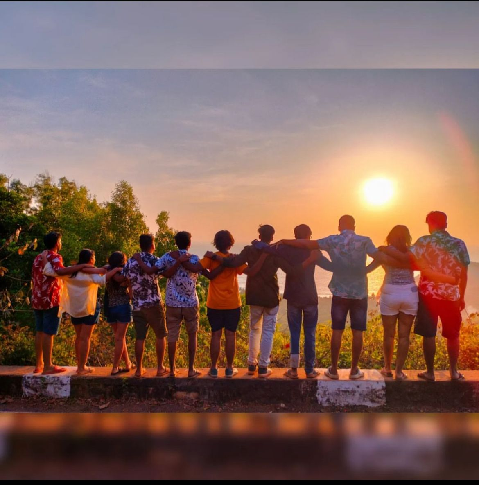
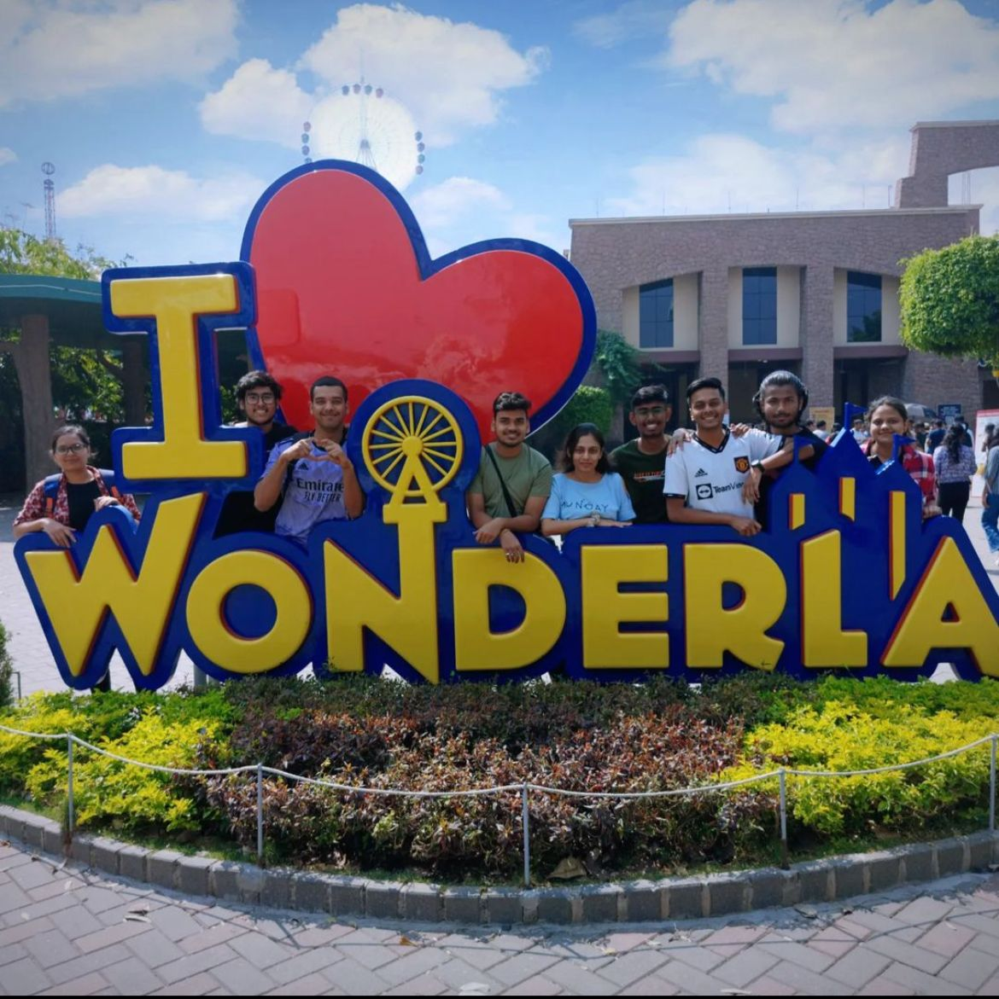

My Blogs
This is the Title of my first blog
My first trip to Gokarna with my friends was an unforgettable experience. It was my first time exploring beaches, and I was mesmerized by the pristine sands and crystal-clear waters. We spent our days soaking up the sun and swimming in the sea.
The evenings were filled with laughter and music around bonfires, creating memories that will last a lifetime. The combination of the serene environment and the company of close friends made this trip incredibly special, leaving me with a newfound appreciation for beach destinations and the joy of shared adventures.
This is the Title of my second blog
My second one-day outing with friends to Wonderla amusement park was an exhilarating adventure. From the moment we entered, the vibrant atmosphere and the array of thrilling rides had us all excited.
We spent the day hopping from one ride to another, screaming our hearts out on the roller coasters, and laughing uncontrollably on the water rides. The adrenaline rush from the high-speed attractions was perfectly balanced by the fun and camaraderie we shared. This day at Wonderla was filled with unforgettable moments, making it a perfect escape from our routine and a testament to the joy of friendship and adventure.
This is the Title of my third blog
My third trip with friends took us to the breathtaking hills of Coorg, where we immersed ourselves in the natural beauty and adventure the region has to offer. We explored the lush mountains, wandered through aromatic coffee plantations, and embarked on exhilarating trekking trails.

The picturesque landscapes and serene environment provided a perfect backdrop for our adventures. Each day was filled with new discoveries, from the vibrant flora and fauna to the stunning viewpoints. The blend of outdoor activities and the camaraderie of my friends made this trip to Coorg a memorable and joyous experience, leaving us all with cherished memories and a deep appreciation for nature.